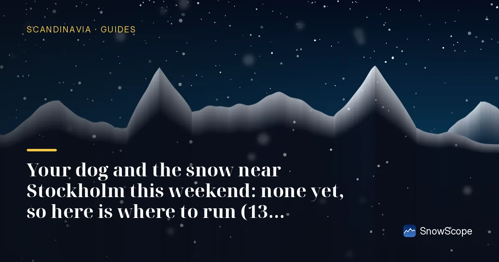

Your dog and the snow near Stockholm this weekend: none yet, so here is where to run (13 November 2026)
Your dog will find no snow to roll in around Stockholm this weekend. All nine weather stations near the city measured bare ground on Friday, 13 November, and the forecast shows only mild weather ahead. The nearest snow lies 75 km north, where a few centimetres have fallen. Here are places to walk your dog instead, and when white ground may finally reach the region.
See the live snow forecast for Stockholm in the SnowScope appSnow depth, powder alerts and the 3D map, free.
No snow yet, but walking weather is good
Stockholm-Observatoriekullen, the official city weather station, recorded 0 cm on Friday. So did all surrounding stations: Norsborg, Vallentuna, Södertälje and Dalarö. This is early November normal. In past winters, 11 out of 46 have had snow on this date, and the median depth across those 46 years is 0 cm. The longest snow-free stretches in Stockholm history last until late November.
The weekend brings dry conditions with overnight lows near 0 °C and Sunday highs around 7 °C. Rain arrives on Monday. For now, the city is ideal for forest walks without slippery ground or ice.

Where the snow actually is right now
Real snow lies north of the 60th parallel. SnowScope shows the deepest snow in central Sweden: Sälen has 45 cm at 364 m elevation, Östra Falmark 40 cm near sea level, and Almdalen 38 cm at 615 m. These are ski country and several hours' drive from Stockholm.
The nearest measurable snow to the city is at Norrveda, 75 km north, with 2 cm. Further north, within 150 km, stations show 1 to 5 cm. If you are willing to drive two hours, you will find ground white enough for a dog to run on; beyond 160 km, depths reach 10 cm and more. Check the SnowScope map before you go, because snow is thin and patchy this close to the coast and at low height.
Leash laws and dog areas in Stockholm
Stockholm requires a leash on all public land except in designated dog areas. A hundrastgård is a fenced enclosure where your dog can run free; a hundrastområde is unfenced, and your dog may be loose only under your close control and if it obeys recall. The city publishes a full list and map of both kinds on its parks website.
The national hunting law that restricts loose dogs runs from 1 March to 20 August, so it does not apply in November. However, Stockholm's nature reserves ask for a lead on all public land where no dog area is marked, and the same rule applies in every national park and nature reserve across Sweden.
Nackareservatet: forest and a fenced dog run
If you want a longer walk with open space, Nackareservatet offers a mix of woodland and water. The Stockholm section includes a fenced hundrastgård in the valley towards Söderbysjön, next to seating, a small pond and outdoor gym equipment. Enter from the Björkhagen side, by the golf club entrance. Outside this fenced area, your dog must wear a lead throughout the reserve.
The reserve has paths ranging from easy walks along the water to steeper forest trails. The terrain is dry now, so muddy boots are unlikely. On a clear November afternoon, light lasts only until around 15:00, so start early or wear a reflective vest.
When will snow reach Stockholm?
November snow is rare in the Stockholm region. The median date for first snow across 46 past winters is 30 November. By mid-December the probability rises: the median depth on 1 December is 1 cm, and by 15 December it is 2 cm. By mid-January, most winters show 5 cm or more.
Watch the SnowScope map in the coming weeks. When a cold spell moves south from Scandinavia or west from Russia, the white belt will spread. For now, the region remains locked in an autumn pattern, and dog walkers should enjoy the lack of ice and salt on forest paths while it lasts.
Tips for skiers
- November dusk falls early—around 15:00—so wear a reflective collar or vest on forest walks to stay visible to cars.
- If you do drive north for snow, rinse your dog's paws afterwards; salt and grit used on roads damage pads.
- Before a long drive, check the SnowScope map for the actual depth where you are heading. Thin, patchy snow near the coast can disappear under a dog's weight.
- Nackareservatet's fenced dog area is best in mid-morning or early afternoon when you have enough light. Bring water for your dog if the walk is more than an hour.
- Keep an eye on the forecast for mid-to-late November. When overnight temperatures drop below freezing and moist air arrives from the Atlantic or Arctic, snow can fall rapidly and transform the region in days.
About these numbers
Resort snow depths are the deepest snow on the resort's upper slopes on the date shown; they are estimates for an area, not a measurement at one point. Forecasts can change. Always read the official avalanche bulletin before going off-piste.
Cite this report
For research, teaching or the press: the numbers and charts are free to reuse under CC BY 4.0 with this citation.
SnowScope (2026), Your dog and the snow near Stockholm this weekend: none yet, so here is where to run (13 November 2026), https://snowscope.app/blog/en/2026/11/stockholm-dog-snow-weekend-13-november-2026.html, accessed 2026-11-13
SnowScope (Atlas Labs). (2026, November 13). Your dog and the snow near Stockholm this weekend: none yet, so here is where to run (13 November 2026). SnowScope snow reports. https://snowscope.app/blog/en/2026/11/stockholm-dog-snow-weekend-13-november-2026.html
BibTeX
@misc{snowscope2026stockholmdogsnowweekend1,
author = {{SnowScope (Atlas Labs)}},
title = {Your dog and the snow near Stockholm this weekend: none yet, so here is where to run (13 November 2026)},
year = {2026},
month = nov,
howpublished = {\url{https://snowscope.app/blog/en/2026/11/stockholm-dog-snow-weekend-13-november-2026.html}},
note = {Published 2026-11-14 13:29 UTC; accessed 2026-11-13}
}· CC BY 4.0 · Methods, data and tools →
Follow Stockholm
Free: a message when fresh snow is coming, and the forecast every morning.
More snow reports

Sälen station near Kläppen measured 45 cm on 13 November after one night of heavy snow. Rain and mild air arrive this week. Data from 13 November 2026.

Idre Fjäll's December snow odds improve sharply after mid-month. On 13 November, the typical mid-mountain depth on 15 December is 32 cm.

Himos opens a prepared cross-country loop on 14 November as natural snow remains absent from the forest floor around this Finnish resort.